Answering questions about CPAN that nobody asked Note: Today I would like to talk to you about some experiments around CPAN, versions, dependencies and indexing. It's based on non existing use cases, but still interesting I guess. Be prepared!
My weapons: - CPAN - PAUSE - cpanm - cpm - MetaCPAN - And... Crazy Ideas ! 🙀
Circular dependencies
Acme::Prereq::A and Acme::Prereq::B (MSCHILLI) ```text -------------------------- | | | V Acme::Prereq::A Acme::Prereq::B ^ | | | -------------------------- ```
cpanm detects and fails ```text [1|5,9,10,12] $ cpanm Acme::Prereq::A --> Working on Acme::Prereq::A Fetching http://www.cpan.org/authors/id/M/MS/MSCHILLI/Acme-Prereq-A-0.01.tar.gz ... OK Configuring Acme-Prereq-A-0.01 ... OK ==> Found dependencies: Acme::Prereq::B --> Working on Acme::Prereq::B Fetching http://www.cpan.org/authors/id/M/MS/MSCHILLI/Acme-Prereq-B-0.01.tar.gz ... OK Configuring Acme-Prereq-B-0.01 ... OK ==> Found dependencies: Acme::Prereq::A ! Installing the dependencies failed: Module 'Acme::Prereq::A' is not installed ! Bailing out the installation for Acme-Prereq-B-0.01. ! Installing the dependencies failed: Module 'Acme::Prereq::B' is not installed ! Bailing out the installation for Acme-Prereq-A-0.01. ```
cpm is even more explicit ```text [1|4,6] $ cpm install Acme::Prereq::A ... ... Detected circular dependencies Acme-Prereq-A-0.01 -> Acme-Prereq-B-0.01 -> Acme-Prereq-A-0.01 Failed to install distribution Detected circular dependencies Acme-Prereq-B-0.01 -> Acme-Prereq-A-0.01 -> Acme-Prereq-B-0.01 Failed to install distribution ```
"Closer" circular dependencies
A distribution that depends on itself ```text ----------------- | | | | Acme::Prereq::Itself | ^ | | | ------------------ ``` Acme::Prereq::Itself ```perl [2] PREREQ_PM => { 'Acme::Prereq::Itself' => '0', }, ```
Is it really worse or better? 🙃
cpanm fails ```text [1|6-7] $ cpanm Acme::Prereq::Itself --> Working on Acme::Prereq::Itself Fetching http://www.cpan.org/authors/id/C/CO/CONTRA/Acme-Prereq-Itself-0.01.tar.gz ... OK Configuring Acme-Prereq-Itself-0.01 ... OK ==> Found dependencies: Acme::Prereq::Itself ! Installing the dependencies failed: Module 'Acme::Prereq::Itself' is not installed ! Bailing out the installation for Acme-Prereq-Itself-0.01. ```
And cpm also ```text [1|3-5] $ cpm install Acme::Prereq::Itself ... Distribution provides: Acme::Prereq::Itself (0.01) Detected circular dependencies Acme-Prereq-Itself-0.01 -> Acme-Prereq-Itself-0.01 Failed to install distribution
CPANTesters have no problem with it (they do not use package managers + "blib" install...)
Diamond dependencies hell
Constraints impossible to satisfy ```bash C / \ / \ / \ D E \ / <=1.0 >=2.0 \ / F ``` Acme::Prereq::C ```perl [2-3] PREREQ_PM => { 'Acme::Prereq::D' => '0', 'Acme::Prereq::E' => '0', }, ```
Acme::Prereq::E ```perl [2] PREREQ_PM => { 'Acme::Prereq::F' => '>=2.0.0', }, ``` Acme::Prereq::D ```perl [2] PREREQ_PM => { 'Acme::Prereq::F' => '<=1.0.0', }, ```
First cpanm try fails ```bash [1|21] $ cpanm Acme::Prereq::C --> Working on Acme::Prereq::C Fetching http://www.cpan.org/authors/id/C/CO/CONTRA/Acme-Prereq-C-0.01.tar.gz ... OK Configuring Acme-Prereq-C-0.01 ... OK ==> Found dependencies: Acme::Prereq::D, Acme::Prereq::E --> Working on Acme::Prereq::D Fetching http://www.cpan.org/authors/id/C/CO/CONTRA/Acme-Prereq-D-0.03.tar.gz ... OK Configuring Acme-Prereq-D-0.03 ... OK ==> Found dependencies: Acme::Prereq::F --> Working on Acme::Prereq::F Fetching http://backpan.perl.org/authors/id/C/CO/CONTRA/Acme-Prereq-F-1.0.0.tar.gz ... OK Configuring Acme-Prereq-F-v1.0.0 ... OK Building and testing Acme-Prereq-F-v1.0.0 ... OK Successfully installed Acme-Prereq-F-v1.0.0 Building and testing Acme-Prereq-D-0.03 ... OK Successfully installed Acme-Prereq-D-0.03 --> Working on Acme::Prereq::E Fetching http://backpan.perl.org/authors/id/C/CO/CONTRA/Acme-Prereq-E-0.03.tar.gz ... OK Configuring Acme-Prereq-E-0.03 ... OK ==> Found dependencies: Acme::Prereq::F ! Installing the dependencies failed: Installed version (1.0.0) of Acme::Prereq::F is not in range 'v2.0.0' ! Bailing out the installation for Acme-Prereq-E-0.03. ! Installing the dependencies failed: Module 'Acme::Prereq::E' is not installed ! Bailing out the installation for Acme-Prereq-C-0.01. 2 distributions installed ```
But second cpanm try succeeds! ```bash [1|18] $ cpanm Acme::Prereq::C ✘ 1 --> Working on Acme::Prereq::C Fetching http://www.cpan.org/authors/id/C/CO/CONTRA/Acme-Prereq-C-0.01.tar.gz ... OK Configuring Acme-Prereq-C-0.01 ... OK ==> Found dependencies: Acme::Prereq::E --> Working on Acme::Prereq::E Fetching http://www.cpan.org/authors/id/C/CO/CONTRA/Acme-Prereq-E-0.03.tar.gz ... OK Configuring Acme-Prereq-E-0.03 ... OK ==> Found dependencies: Acme::Prereq::F --> Working on Acme::Prereq::F Fetching http://www.cpan.org/authors/id/C/CO/CONTRA/Acme-Prereq-F-2.0.0.tar.gz ... OK Configuring Acme-Prereq-F-v2.0.0 ... OK Building and testing Acme-Prereq-F-v2.0.0 ... OK Successfully installed Acme-Prereq-F-v2.0.0 (upgraded from 1.0.0) Building and testing Acme-Prereq-E-0.03 ... OK Successfully installed Acme-Prereq-E-0.03 Building and testing Acme-Prereq-C-0.01 ... OK Successfully installed Acme-Prereq-C-0.01 3 distributions installed ```
Because "jerky" install does the trick Notes: ```bash [1] $ cpanm -U Acme::Prereq::F Acme::Prereq::E Acme::Prereq::D Acme::Prereq::C ```
Install Acme::Prereq::D first ```bash [1|10] $ cpanm Acme::Prereq::D --> Working on Acme::Prereq::D Fetching http://www.cpan.org/authors/id/C/CO/CONTRA/Acme-Prereq-D-0.03.tar.gz ... OK Configuring Acme-Prereq-D-0.03 ... OK ==> Found dependencies: Acme::Prereq::F --> Working on Acme::Prereq::F Fetching http://backpan.perl.org/authors/id/C/CO/CONTRA/Acme-Prereq-F-1.0.0.tar.gz ... OK Configuring Acme-Prereq-F-v1.0.0 ... OK Building and testing Acme-Prereq-F-v1.0.0 ... OK Successfully installed Acme-Prereq-F-v1.0.0 Building and testing Acme-Prereq-D-0.03 ... OK Successfully installed Acme-Prereq-D-0.03 2 distributions installed ``` (Acme::Prereq::F is installed with 1.0.0)
Then install Acme::Prereq::C ```bash [1|14] $ cpanm Acme::Prereq::C --> Working on Acme::Prereq::C Fetching http://www.cpan.org/authors/id/C/CO/CONTRA/Acme-Prereq-C-0.01.tar.gz ... OK Configuring Acme-Prereq-C-0.01 ... OK ==> Found dependencies: Acme::Prereq::E --> Working on Acme::Prereq::E Fetching http://www.cpan.org/authors/id/C/CO/CONTRA/Acme-Prereq-E-0.03.tar.gz ... OK Configuring Acme-Prereq-E-0.03 ... OK ==> Found dependencies: Acme::Prereq::F --> Working on Acme::Prereq::F Fetching http://www.cpan.org/authors/id/C/CO/CONTRA/Acme-Prereq-F-2.0.0.tar.gz ... OK Configuring Acme-Prereq-F-v2.0.0 ... OK Building and testing Acme-Prereq-F-v2.0.0 ... OK Successfully installed Acme-Prereq-F-v2.0.0 (upgraded from 1.0.0) Building and testing Acme-Prereq-E-0.03 ... OK Successfully installed Acme-Prereq-E-0.03 Building and testing Acme-Prereq-C-0.01 ... OK Successfully installed Acme-Prereq-C-0.01 3 distributions installed ``` (Upgrades Acme::Prereq::F to 2.0.0 under the hood)
Works also with other combinations<br/><br/>(even if it needs downgrading)
Of course with real code, either Acme::Prereq::E or Acme::Prereq::D is now broken
cpm is very nice (by design) 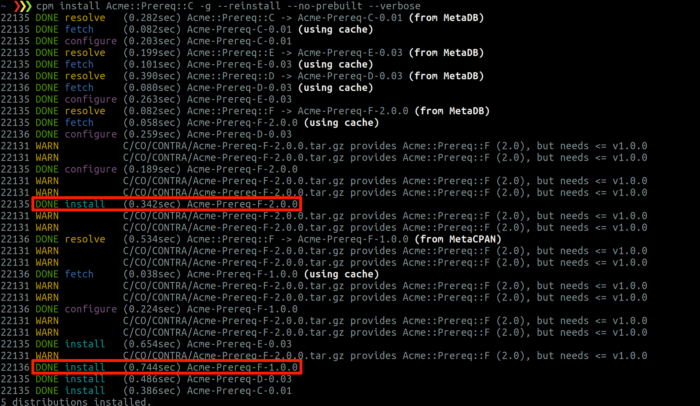 (warns a lot)
A word about pinning/upper bound constraints: THIS IS BAD FOR ECOSYSTEM 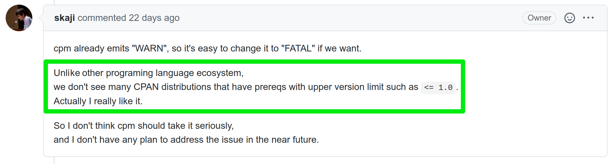 😍 👍 🔥 (keep this practice for reproducible deployments)
Versioning upside down
Revision history for Acme::Version::Regress ```text [7-8|4-5|1-2] 3.00 01 june 2020 / 10H30 Third version, continuing with another lower version number 4.00 01 june 2020 / 10H15 Second version, continuing with a lower version number 5.00 01 june 2020 / 10H00 First version, starting with very high version number ```
Well uploaded to CPAN 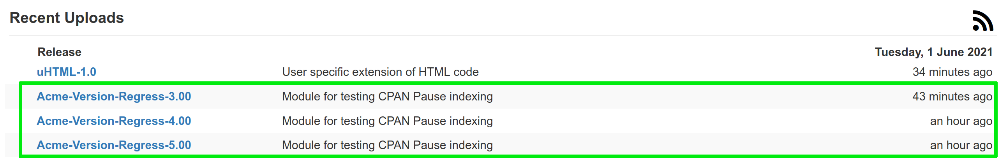
4.00 and 3.00 not indexed by PAUSE 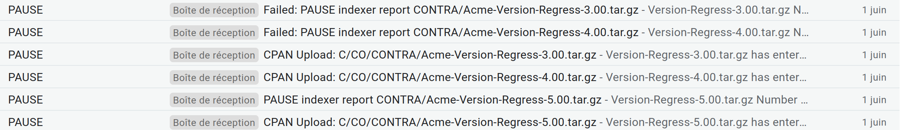
PAUSE detected the decrease 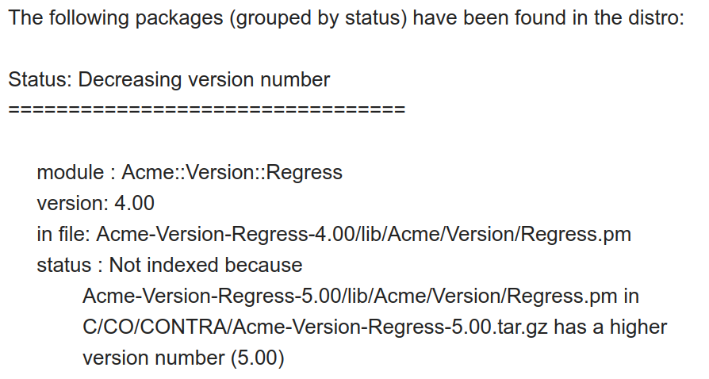
cpanm then installs the indexed 5.00 ```bash [1|6] cpanm Acme::Version::Regress --> Working on Acme::Version::Regress Fetching http://www.cpan.org/authors/id/C/CO/CONTRA/Acme-Version-Regress-5.00.tar.gz ... OK Configuring Acme-Version-Regress-5.00 ... OK Building and testing Acme-Version-Regress-5.00 ... OK Successfully installed Acme-Version-Regress-5.00 1 distribution installed ```
A distribution with a negative version?
Acme::Version::Negative ```perl our $VERSION = '-1.00'; ```
ExtUtils::MakeMaker does not like it: ```bash [1|2-3] $ perl Makefile.PL WARNING: Setting VERSION via file 'lib/Acme/Version/Negative.pm' failed at /usr/local/share/perl/5.26.1/ExtUtils/MakeMaker.pm line 741. Generating a Unix-style Makefile Writing Makefile for Acme::Version::Negative Writing MYMETA.yml and MYMETA.json ``` But does not make it fatal
ExtUtils::MakeMaker changes it to version **0**: ```text [1|28] $ make dist rm -rf Acme-Version-Negative-0 "/usr/bin/perl" "-MExtUtils::Manifest=manicopy,maniread" \ -e "manicopy(maniread(),'Acme-Version-Negative-0', 'best');" mkdir Acme-Version-Negative-0 mkdir Acme-Version-Negative-0/t mkdir Acme-Version-Negative-0/lib mkdir Acme-Version-Negative-0/lib/Acme mkdir Acme-Version-Negative-0/lib/Acme/Version Generating META.yml Generating META.json tar cvf Acme-Version-Negative-0.tar Acme-Version-Negative-0 Acme-Version-Negative-0/ Acme-Version-Negative-0/META.yml Acme-Version-Negative-0/lib/ Acme-Version-Negative-0/lib/Acme/ Acme-Version-Negative-0/lib/Acme/Version/ Acme-Version-Negative-0/lib/Acme/Version/Negative.pm Acme-Version-Negative-0/MANIFEST Acme-Version-Negative-0/Changes Acme-Version-Negative-0/Makefile.PL Acme-Version-Negative-0/README Acme-Version-Negative-0/META.json Acme-Version-Negative-0/t/ Acme-Version-Negative-0/t/00-load.t rm -rf Acme-Version-Negative-0 gzip -9f Acme-Version-Negative-0.tar Created Acme-Version-Negative-0.tar.gz ```
Version **0** is not indexed by PAUSE 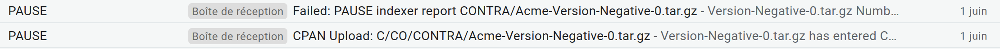
But is well there in MetaCPAN 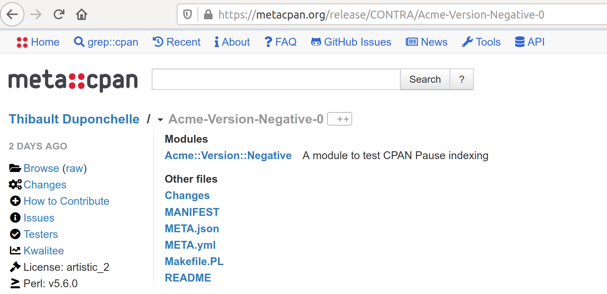 (but hidden)
Module::Build does not accept it at all ```text [1|13] $ perl Build.PL Version '-1.00' from /home/tduponchelle/Code/Acme-Version-Negative/lib/Acme/Version/Negative.pm does not appear to be valid: my $dummy = q# Hide from _packages_inside() #; package Module::Metadata::_version::p2; use version; sub { local $VERSION; our $VERSION = '-1.00';; return $VERSION if defined $VERSION; return $Module::Metadata::_version::p2::VERSION; }; The fatal error was: Invalid version format (negative version number) ```
With older ExtUtils::MakeMaker? 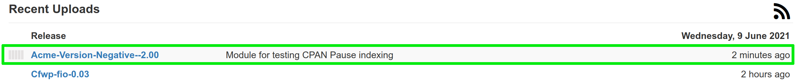 (But still not indexed)
Probable "killjoy" is [7.59_01/7.60](https://metacpan.org/dist/ExtUtils-MakeMaker/changes) ```text [7-8] 7.60 Wed 17 Feb 10:45:47 GMT 2021 No changes since v7.59_01 7.59_01 Tue 2 Feb 09:47:29 GMT 2021 Bug fixes: - Don't allow hyphens in parsed versions Test fixes: - Use correct hint file name in hints.t ```
What happens to distributions never indexed?
- Uploaded to PAUSE<br/><br/> - Well in MetaCPAN but "hidden" (in 2021)
One more?
Acme::Version::utf8 ```perl our $VERSION = '😏'; ```
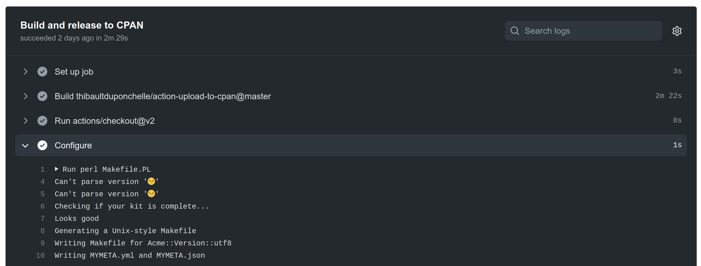
It smells bad ```text [5-9|13-25] $ make dist rm -rf Acme-Version-utf8-ð "/usr/bin/perl" "-MExtUtils::Manifest=manicopy,maniread" \ -e "manicopy(maniread(),'Acme-Version-utf8-ð', 'best');" mkdir Acme-Version-utf8-ð mkdir Acme-Version-utf8-ð/lib mkdir Acme-Version-utf8-ð/lib/Acme mkdir Acme-Version-utf8-ð/lib/Acme/Version mkdir Acme-Version-utf8-ð/t Generating META.yml Generating META.json tar cvf Acme-Version-utf8-ð.tar Acme-Version-utf8-ð Acme-Version-utf8-ð\302\237\302\230\302\217/ Acme-Version-utf8-ð\302\237\302\230\302\217/Changes Acme-Version-utf8-ð\302\237\302\230\302\217/MANIFEST Acme-Version-utf8-ð\302\237\302\230\302\217/META.json Acme-Version-utf8-ð\302\237\302\230\302\217/t/ Acme-Version-utf8-ð\302\237\302\230\302\217/t/00-load.t Acme-Version-utf8-ð\302\237\302\230\302\217/Makefile.PL Acme-Version-utf8-ð\302\237\302\230\302\217/lib/ Acme-Version-utf8-ð\302\237\302\230\302\217/lib/Acme/ Acme-Version-utf8-ð\302\237\302\230\302\217/lib/Acme/Version/ Acme-Version-utf8-ð\302\237\302\230\302\217/lib/Acme/Version/utf8.pm Acme-Version-utf8-ð\302\237\302\230\302\217/META.yml Acme-Version-utf8-ð\302\237\302\230\302\217/README rm -rf Acme-Version-utf8-ð gzip -9f Acme-Version-utf8-ð.tar Created Acme-Version-utf8-ð.tar.gz ```
Uploaded 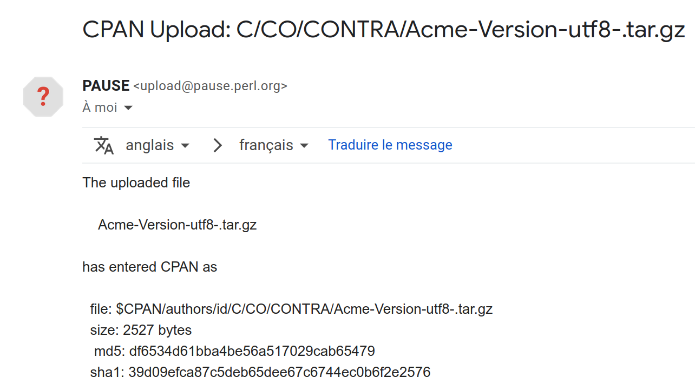 (but version seems missing or not visible)
Not indexed 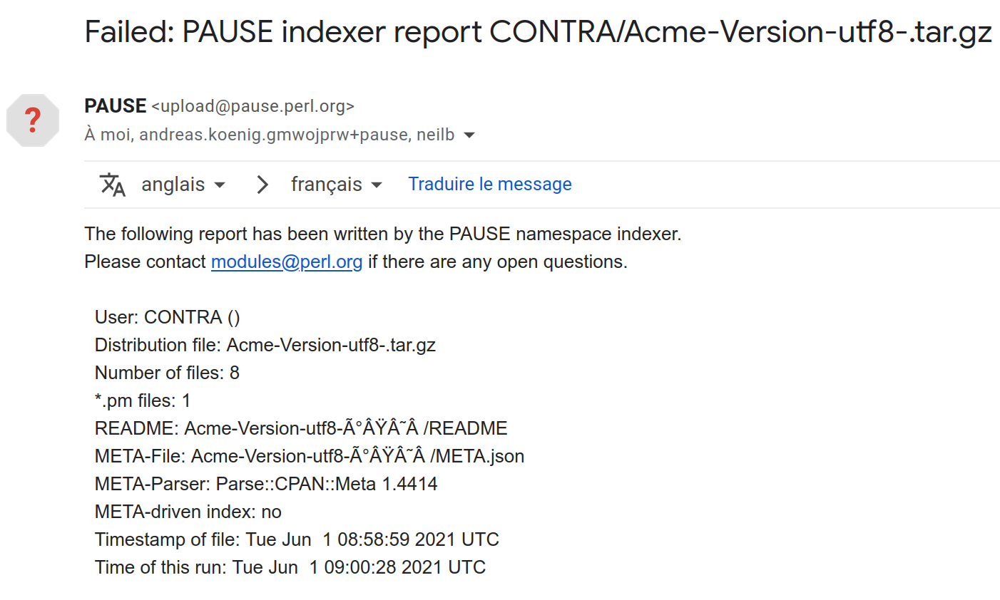
I can see it in MetaCPAN
But it is a bad idea to click on it 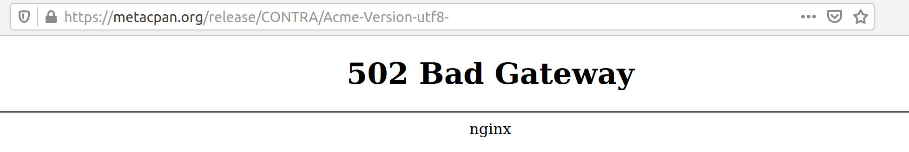 😬
Actually, recent ExtUtils::MakeMaker translates '😏' to version **0** like Acme::Version::Negative <br/> (EUMM installed in GitHub actions is 7.34)
I can fetch it with cpanm but it fails with "Bad archive" ```text [1|5] $ cpanm Acme::Version::utf8 ! Finding Acme::Version::utf8 on cpanmetadb failed. --> Working on Acme::Version::utf8 Fetching http://cpan.metacpan.org/authors/id/C/CO/CONTRA/Acme-Version-utf8-.tar.gz ... OK ! Bad archive: Acme-Version-utf8-.tar.gz ! Failed to unpack Acme-Version-utf8-.tar.gz: no directory ! Failed to fetch distribution Acme-Version-utf8- ``` cpm fails also but less explicitely: ```text [1|3] $ cpm install Acme::Version::utf8 --show-build-log-on-failure ... Failed to fetch/configure distribution ... ```
For the record, I can install manually (from CPAN) with: `wget + tar + EUMM` <br/> And print version with: ```text [2] $ perl -MAcme::Version::utf8 -e 'use open ":std", ":encoding(UTF-8)"; print $Acme::Version::utf8::VERSION ."\n";' 😏 ```
Extra bits: * [Acme::Version::Hex](https://metacpan.org/pod/Acme::Version::Hex) (ETHER) * [Acme::Prereq::None](https://metacpan.org/pod/Acme::Prereq::None) (MSCHILLI)
As a matter of conclusion: We have a very healthy ecosystem! 💯 👍 😎
Sorry to all CPAN modules injured during this talk! 🤕 🥴 😘
Thank you!